Authors: Christoph W. Zollitsch, Jonas N. Bach, Christopher W. M. Kay, Jonathan D. Breeze
Type: experiment · Category: other · PDF: https://arxiv.org/pdf/2608.18692v1
Analysis basis: full PDF text, analyzed in chunks
Topic relevance: 🔥 driven-dissipative phase transition 4/5 · Tavis-Cummings & cavity-many-emitter 3/5 · non-equilibrium universality 3/5 · quantum optics experiment 3/5 · correlated / nonlocal dissipation 2/5 · interference shaping light 2/5 · methods for driven-dissipative 2/5 · superradiant laser 2/5 · Dicke superradiance 1/5 · QC/QI experiment 1/5 · analog quantum simulation 1/5 · quantum measurements 1/5
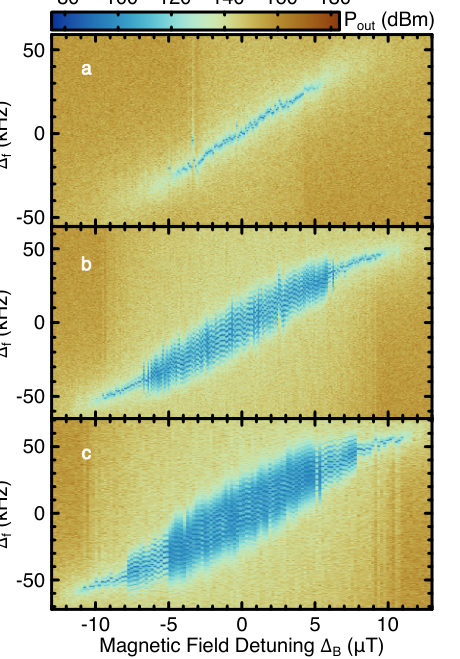
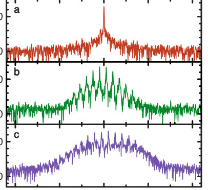
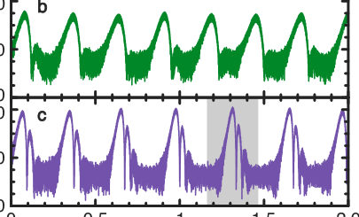
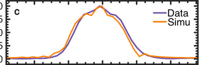
Summary. This paper reports on observing multiple nonlinear dynamical thresholds in a room-temperature diamond maser utilizing $ ext{NV}^-$ centers. As the optical pump power increases, the maser transitions from continuous wave emission to a periodic train of microwave pulses, generating a frequency comb. The analysis confirms that these dynamics are governed by nonlinear collective spin-resonator interactions.
Why it may be interesting. This work provides a clean, solid-state platform for observing driven, dissipative, nonlinear dynamics, particularly the transition to coherent, structured light emission (frequency combs) in a solid-state quantum emitter system.
Main problem. The study investigates the nonlinear collective dynamics and the generation of microwave frequency combs within a room-temperature maser system.
Main result. The maser exhibits three distinct nonlinear thresholds as the pump rate increases, leading to the generation of a frequency comb spectrum from periodic microwave pulses.
Method. The research employs time-resolved measurements of output power, Fourier analysis (FFT) of transient signals, and spectroscopy across different pump rates.
Model / system. The system is an optically pumped nitrogen-vacancy ($ ext{NV}^-$) center ensemble in diamond, operating as a maser coupled to a high-quality factor microwave resonator.
Key observables. Output power ($P_{out}$), linewidths ($\sigma, \Gamma$), comb teeth spacing ($\sim 3.8 ext{ kHz}$), and transient pulse shapes.
Important parameters / regimes. Three distinct nonlinear thresholds; resonator $Q$-factor of $\sim 42,772$; pulse period $T \approx 261 \mu ext{s}$.
Assumptions / limitations. The analysis assumes the maser dynamics are governed by nonlinear collective spin-resonator interactions, and the linewidths are compared against the inhomogeneous broadening.
Figures summary. Figures illustrate the transition from CW emission to periodic pulsing (comb) and the subsequent oscillatory, chirped decay, confirmed by time-domain transients and FFT spectra.
Paper structure. The paper progresses by first identifying the three spectral regimes via power measurements, then using time-resolved spectroscopy to confirm the periodic pulsing, and finally using FFT analysis to characterize the frequency content and chirp of the pulses.
Optically pumped room temperature masers are a promising platform for driven dissipative spin photon physics beyond steady state emission. Here we observe a sequence of dynamical thresholds in a room temperature nitrogen vacancy diamond maser as the optical pump is increased above the conventional masing threshold. The first threshold yields narrow-line continuous wave emission, while a second threshold produces a periodic train of microwave pulses whose repetition rate generates a frequency comb spectrum. At higher pump power, a third threshold gives rise to pulses with an oscillatory, frequency chirped decay. Time-resolved measurements link the comb directly to self-pulsing dynamics and Fourier analysis of individual bursts reveals a broad distribution of frequencies consistent with collective spin-resonator dynamics in an inhomogeneously broadened ensemble. These results establish the diamond maser as a room temperature platform for nonlinear nonequilibrium light matter dynamics and microwave comb generation.
Authors: Ding Huang, Minwei Shi, Guzhi Bao, Keye Zhang, Weiping Zhang
Type: both · Category: other · PDF: https://arxiv.org/pdf/2608.18941v1
Analysis basis: full PDF text, analyzed in chunks
Topic relevance: 🔥 driven-dissipative phase transition 4/5 · 🔥 non-equilibrium universality 4/5 · analog quantum simulation 2/5 · methods for driven-dissipative 2/5 · correlated / nonlocal dissipation 1/5 · quantum measurements 1/5 · quantum optics experiment 1/5
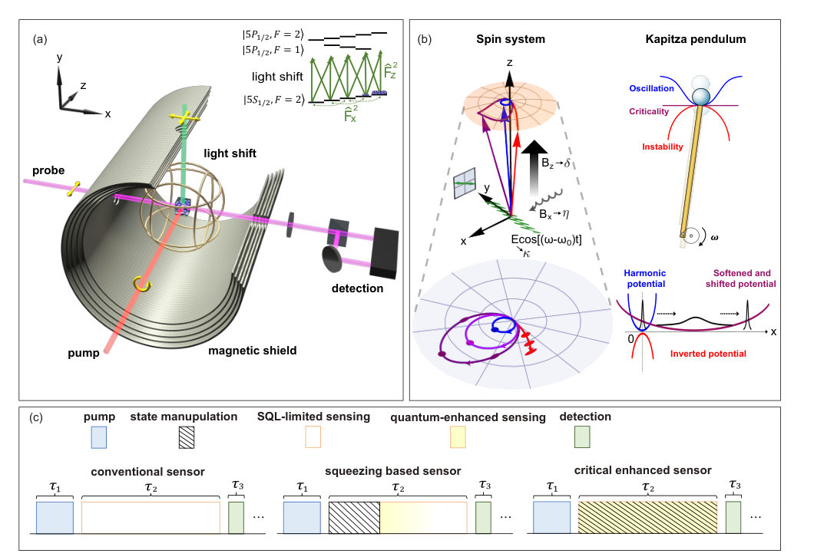
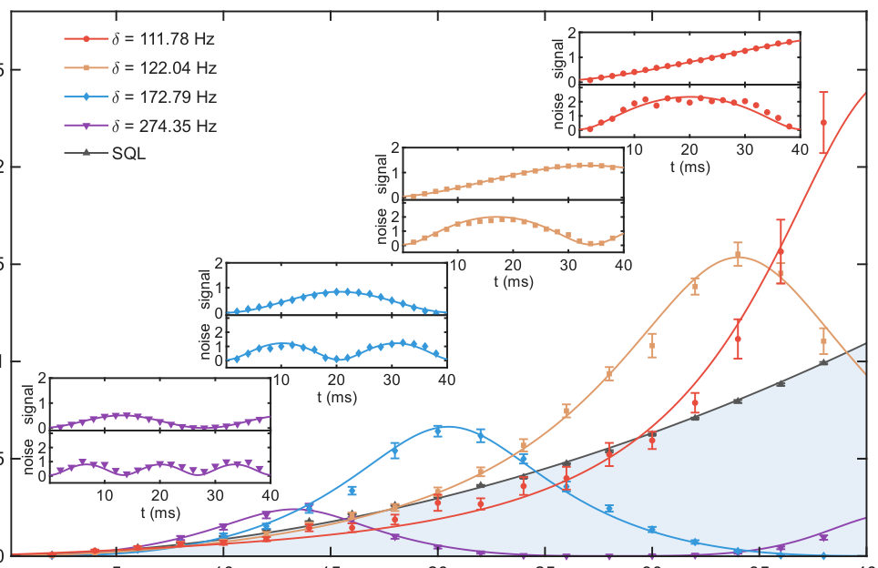
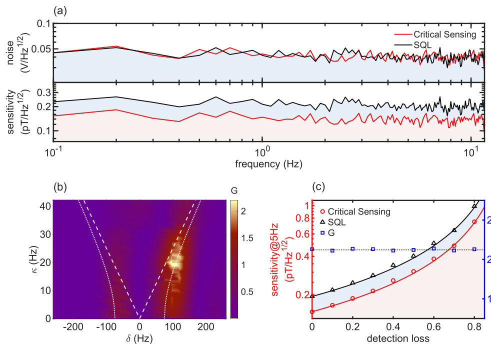
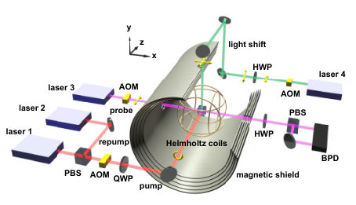
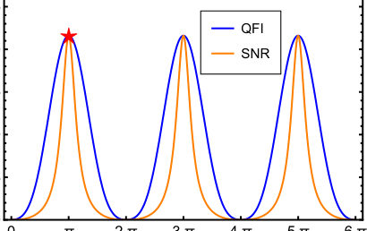
Summary. This paper introduces a novel method for enhancing quantum sensor sensitivity by operating an atomic spin system near a dynamical critical point. By engineering the system into a non-equilibrium state, the authors exploit a 'noise ebbing' effect that amplifies the signal while suppressing quantum noise. This technique successfully demonstrates a measurable improvement over the Standard Quantum Limit in an atomic magnetometer.
Why it may be interesting. This work provides a concrete, experimentally realizable pathway to quantum enhancement in sensing that bypasses the need for fragile entangled states, making it highly relevant for AMO physicists working on open quantum systems and quantum optics.
Main problem. The primary challenge is surpassing the Standard Quantum Limit (SQL) in quantum sensors, which is limited by intrinsic quantum noise.
Main result. The authors demonstrate a universal protocol for noiseless critical sensing, achieving a 3.3 dB metrological gain over the SQL in an atomic magnetometer.
Method. They engineer the atomic spin system near a dynamical critical point, exploiting a 'noise ebbing' mechanism in a non-equilibrium regime.
Model / system. The system is an atomic ensemble (e.g., $^{87} ext{Rb}$ atoms) whose spin dynamics are modeled using an effective Hamiltonian analogous to a Kapitza pendulum. The dynamics are driven by periodic light fields.
Key observables. Signal susceptibility, quantum noise variance, and the resulting metrological gain (SNR improvement).
Important parameters / regimes. The detuning parameter ($\delta$) relative to the critical point ($\delta_c$), and the ratio controlling the non-equilibrium drive ($g_A$).
Assumptions / limitations. The protocol relies on the system entering a non-equilibrium regime where the signal susceptibility diverges while the noise periodically returns to its coherent baseline.
Figures summary. Figures illustrate the experimental setup, the dynamics on the Bloch sphere near criticality, and comparisons of sensing protocols (conventional vs. critical enhancement).
Paper structure. The paper establishes the problem (SQL limit), introduces quantum criticality as an alternative, details the theoretical model (Hamiltonians, Kapitza analogy), presents the noise-less sensing mechanism, and concludes with experimental validation showing the metrological gain.
The sensitivity of quantum sensors is fundamentally constrained by the standard quantum limit (SQL) arising from intrinsic quantum fluctuations. While non-classical resources like squeezing or entanglement can surpass this limit, their utility is often restricted by the extreme fragility of entangled states and the complexity of their preparation. Quantum criticality offers a compelling alternative by harnessing divergent susceptibility to amplify signals without requiring fragile non-classical resources. However, the practical benefit of this approach has remained controversial due to the potential for the simultaneous amplification of quantum noise. Here, we demonstrate a universal protocol for noiseless critical sensing by engineering a light-driven atomic ensemble near a dynamical critical point. Analogous to a Kapitza pendulum near its inverted orientation, the spin system enters a non-equilibrium regime where the signal susceptibility diverges while the quantum noise periodically recedes to its coherent baseline. We exploit this ``noise ebbing'' to create a built-in noiseless amplifier, demonstrating a 3.3 dB metrological gain over the SQL in an atomic magnetometer. Our implementation exhibits intrinsic robustness against common experimental imperfections such as detection losses, establishing non-equilibrium critical dynamics as a practical and versatile paradigm for surpassing the fundamental limits of quantum sensing.
Authors: Yichuan Zhang, Xuanyu Liu, Zemeng Lin, Wange Song, Shuang Zhang
Type: both · Category: quantum information and computing · PDF: https://arxiv.org/pdf/2608.18794v1
Analysis basis: full PDF text, analyzed in chunks
Topic relevance: 🔥 QC/QI experiment 4/5 · 🔥 interference shaping light 4/5 · analog quantum simulation 3/5 · quantum optics experiment 3/5
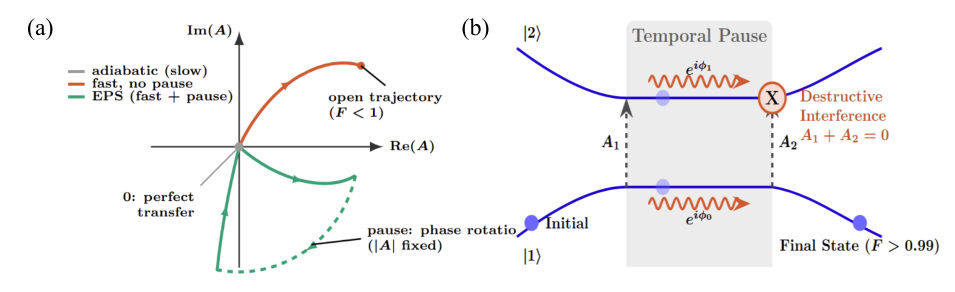
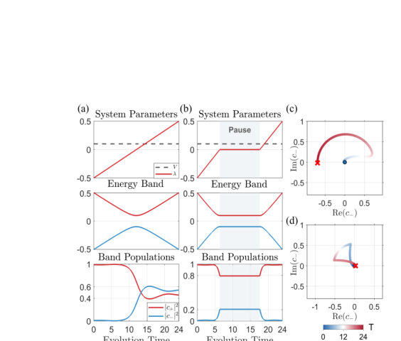
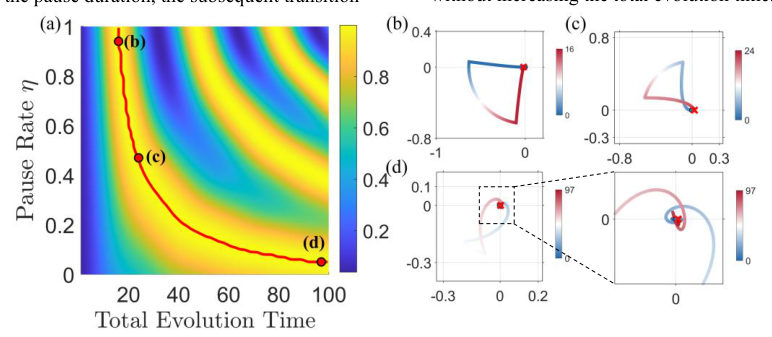
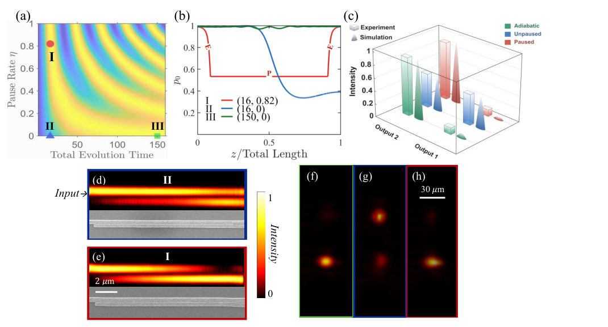
Summary. This paper introduces Evolution-Pause Synthesis (EPS), a novel, interference-engineered technique for achieving fast, high-fidelity quantum state transfer. EPS works by introducing controlled temporal pauses to manipulate the relative phases of quantum amplitudes, allowing for acceleration without needing external fields or complex Hamiltonian engineering. The method is successfully demonstrated both theoretically and experimentally on silicon photonics, showing significant reductions in required device length.
Why it may be interesting. This work provides a hardware-compatible, purely Hamiltonian-based method for fast coherent control, which is highly relevant for building scalable quantum photonic circuits and quantum information processors.
Main problem. The challenge is achieving fast, high-fidelity state transfer in integrated photonic circuits without relying on complex or non-native auxiliary couplings.
Main result. The proposed method, Evolution-Pause Synthesis (EPS), achieves near-perfect state transfer with an 11.8-fold acceleration over adiabatic methods, demonstrated experimentally on a silicon photonic platform.
Method. EPS is an interference-engineered shortcut protocol that uses strategically interleaved temporal pauses to cancel accumulated transition amplitudes via destructive interference, keeping the process within the native system Hamiltonian.
Model / system. The work models light propagation in coupled-mode theory (CMT) for evanescently coupled waveguides, generalized to a multilevel STIRAP system. The dynamics are governed by a time-dependent Hamiltonian.
Key observables. Final-state fidelity, device length (e.g., $16 \mu ext{m}$ vs $150 \mu ext{m}$), and acceleration factor.
Important parameters / regimes. Total evolution time ($T$), pause rate ($\eta$), and the coupling coefficient ($\kappa$).
Assumptions / limitations. The protocol assumes the Hamiltonian can be temporarily held fixed during pauses to control relative dynamical phases, avoiding the need for auxiliary fields.
Figures summary. Figures conceptually illustrate how pauses redirect the transition amplitude trajectory to close at zero, and compare fidelity landscapes for adiabatic, no-pause, and EPS protocols.
Paper structure. The paper introduces the problem limitations, details the EPS mechanism using theoretical analysis (Landau-Zener model), presents optimization strategies (mapping fidelity vs. time/pause rate), and concludes with experimental validation on a silicon photonic platform.
Achieving fast, high-fidelity state transfer is fundamental to scalable integrated photonics and quantum information processing. While adiabatic evolution provides inherent robustness against control and fabrication imperfections, its requirement for slow driving leads to impractically long propagation distances in photonic circuits. Existing acceleration strategies, such as shortcuts to adiabaticity (STA), can dramatically shorten evolution times but generally rely on non-native auxiliary couplings or delicate Hamiltonian engineering that are difficult to implement in practice. Here we introduce evolution-pause synthesis (EPS), an interference engineered shortcut protocol that achieves fast, near-perfect state transfer strictly within the native system Hamiltonian. It achieves this by treating transient excitations as coherent resources and canceling their accumulated amplitudes via strategically interleaved pauses. By decoupling relative dynamical phase accumulation from parameter variations, EPS steers open transition trajectories into a closed loop in complex amplitude space, enabling perfect state transfer without auxiliary fields or complex parameter detours. We demonstrate this mechanism in Landau-Zener dynamics and extend it to a multilevel STIRAP process, achieving an 11.8-fold acceleration over the adiabatic baseline. Further, we experimentally validate EPS on a silicon photonic platform, realizing high-fidelity state transfer in a $16\,μ\mathrm{m}$ footprint, a nearly tenfold reduction in device length compared with a $150\,μ\mathrm{m}$ adiabatic reference. EPS offers a general hardware-compatible framework for fast, practical coherent control across wave and quantum platforms.
Authors: Yoshiaki Tsujimoto, Daiki Ichii, Rikizo Ikuta, Mikio Fujiwara, Masahiro Takeoka, Go Kato, Kentaro Wakui
Type: experiment · Category: quantum information and computing · PDF: https://arxiv.org/pdf/2608.18666v1
Analysis basis: full PDF text, analyzed in chunks
Topic relevance: 🔥 quantum optics experiment 4/5 · QC/QI experiment 3/5 · interference shaping light 3/5
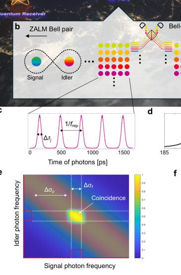
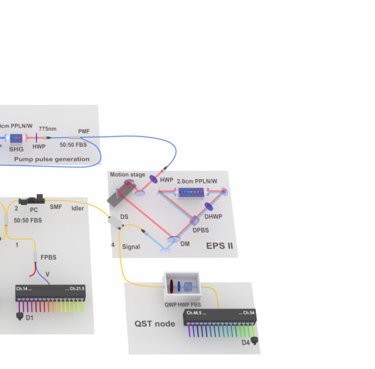
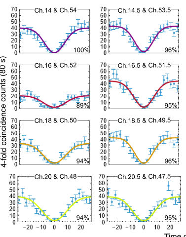
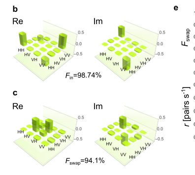
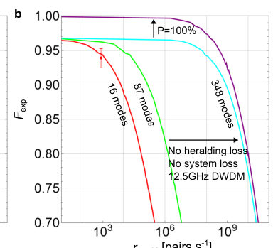
Summary. This paper presents an experimental demonstration of a Zero-Added-Loss Multiplexing (ZALM) Bell-pair source designed to boost quantum network communication rates. By combining frequency and time multiplexing across 16 modes, the authors achieved high-fidelity entanglement swapping. The results establish a scalable, high-rate source crucial for developing practical quantum repeaters and long-haul quantum communication links.
Why it may be interesting. This work is highly relevant to quantum optics and quantum networks, demonstrating a practical, high-rate source of entangled pairs that overcomes key experimental hurdles in multiplexing and entanglement swapping.
Main problem. The central challenge addressed is boosting the communication rate of quantum networks by achieving high-fidelity entanglement swapping across densely multiplexed time-frequency modes.
Main result. The authors successfully demonstrated entanglement swapping across 16 parallel frequency modes with a high average fidelity of 93.9% and achieved a total swapping rate of 5.38 pairs s-1, enabling a ZALM Bell-pair rate of 8.2e2 pairs s-1.
Method. The experiment combines frequency and time multiplexing using a Zero-Added-Loss Multiplexing (ZALM) Bell-pair source, utilizing off-the-shelf DWDM filters and operating the pump pulse at a high repetition frequency.
Model / system. The physical platform is an experimental ZALM Bell-pair source based on Spontaneous Parametric Down-Conversion (SPDC) in PPLN/Ws waveguides. The system leverages the spectral and temporal degrees of freedom for high-rate entanglement distribution.
Key observables. Average fidelity (93.9% $\pm$ 1.4%), total swapping rate (5.38 $\pm$ 0.17 pairs s-1), and the corresponding ZALM Bell-pair rate (8.2e2 pairs s-1).
Important parameters / regimes. 16 parallel frequency modes, 50-GHz DWDM filters, and a pump pulse repetition frequency of 3.0 GHz.
Assumptions / limitations. The necessity of time-resolved detection ($1/f_{ ext{rep}} \gg \Delta au_j$) is critical for entanglement swapping, and a trade-off exists between spectral bandwidth, spectral purity, and photon loss in frequency multiplexing.
Figures summary. Figure 1 illustrates the ZALM architecture, showing concepts for entanglement distribution, the QTX implementation, temporal photon counts at 3.0 GHz, and the joint spectral amplitude. Other figures detail the trade-offs between bandwidths and the relationship between spectral purity and heralding efficiency.
Paper structure. The paper introduces the ZALM concept for high-rate quantum networking, details the experimental implementation involving 16-mode entanglement swapping, and presents measurements confirming the achieved fidelity and rate, establishing a scalable route for quantum repeaters.
Boosting the communication rate of quantum networks is a central challenge in quantum information science. Recently, an efficient entanglement distribution scheme employing quasi-deterministic Bell-pair sources based on time-frequency multiplexing, referred to as zero-added-loss multiplexing~(ZALM), has been proposed. Its implementation, however, requires high-fidelity entanglement swapping across densely multiplexed time-frequency modes, which has remained an experimental challenge. Here we demonstrate entanglement swapping across 16 parallel frequency modes with a high average fidelity of 93.9$\pm$\SI{1.4}{\%}. Notably, polarization-entangled photon pairs in each frequency mode are spectrally single-mode using only off-the-shelf 50-GHz dense wavelength-division multiplexing~(DWDM) filters, eliminating the need for additional narrowband filtering. Furthermore, in order to fully exploit the temporal degree of freedom, the pump pulse is operated with a repetition frequency of \SI{3.0}{GHz}. By combining the frequency and time multiplexing, the total swapping rate reaches 5.38$\pm$0.17\,\si{pairs\,s^{-1}}, which corresponds to the ZALM Bell-pair rate of \SI{8.2e2}{pairs\,s^{-1}}. Our results establish the key experimental capabilities required for ZALM and demonstrate a scalable route toward practical high-rate quantum repeaters and long-haul quantum networks.
Authors: Kai-Hong Luo, Denis Kopylov, Florian Lütkewitte, Jan-Lucas Eickmann, Simone Atzeni, Fabian Schlue, Benjamin Brecht, Torsten Meier, Polina Sharapova, Michael Stefszky, Christine Silberhorn
Type: both · Category: quantum information and computing · PDF: https://arxiv.org/pdf/2608.18950v1
Analysis basis: full PDF text, analyzed in chunks
Topic relevance: 🔥 quantum optics experiment 4/5 · Keldysh / 2PI / non-Gaussian methods 1/5 · QC/QI experiment 1/5 · driven-dissipative phase transition 1/5 · interference shaping light 1/5 · methods for driven-dissipative 1/5
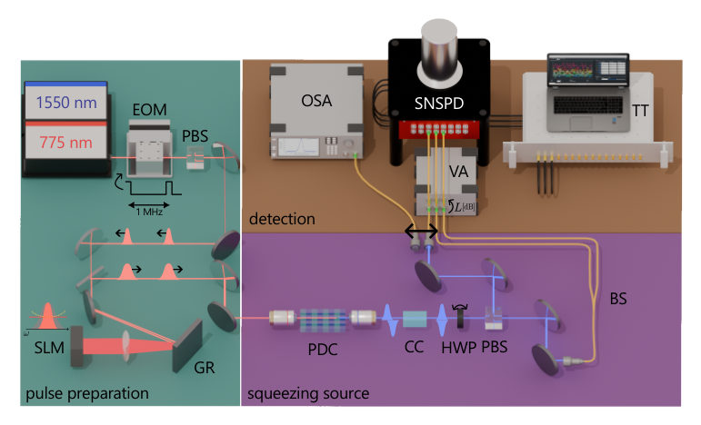
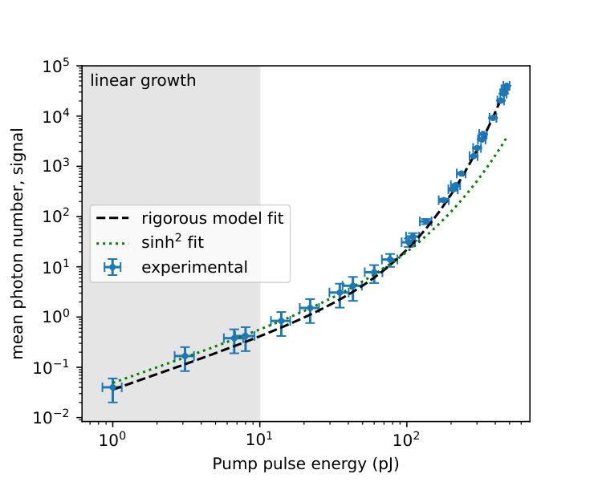
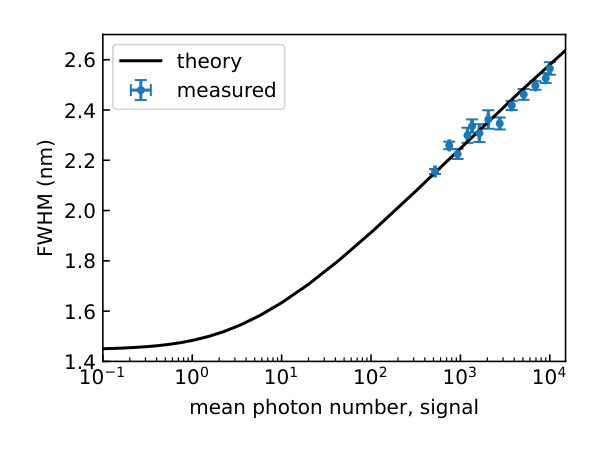
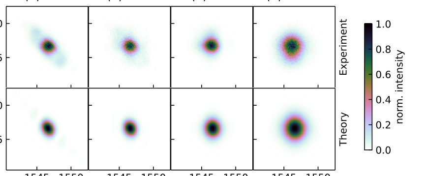
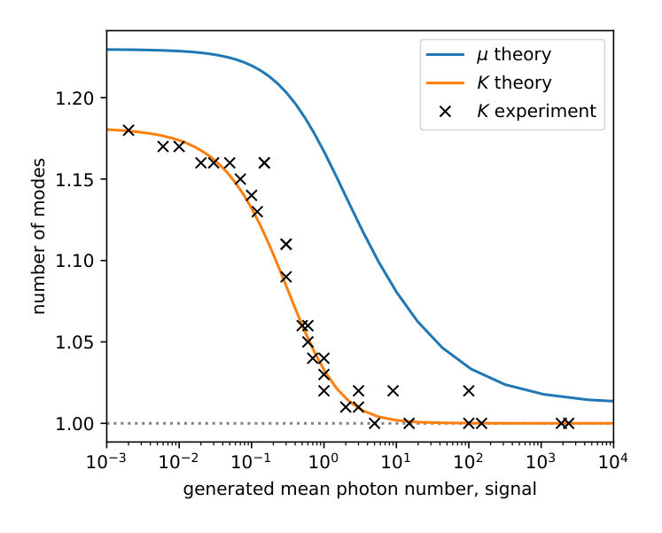
Summary. This paper introduces a novel, highly scalable source based on a periodically poled KTP waveguide designed for hybrid quantum photonics. The source generates ultra-bright, single-mode squeezed vacuum states compatible with existing fiber networks and single-photon detectors. The authors complement the experimental results with a detailed theoretical model to accurately characterize the source's performance under realistic, lossy, and high-gain operating conditions.
Why it may be interesting. This work is highly relevant as it tackles the engineering challenge of creating robust, high-performance quantum light sources, which is foundational for building scalable quantum networks and quantum computation hardware.
Main problem. The challenge is to create a highly scalable, single-mode source of squeezed vacuum states necessary for hybrid quantum photonics, which combines continuous and discrete variable quantum optics.
Main result. The authors present a periodically poled KTP waveguide source that successfully meets all requirements: it is extremely bright, operates at a telecom wavelength (1546 nm), and generates near single-mode squeezed vacuum states.
Method. The work combines experimental demonstration using a specialized KTP waveguide with a comprehensive theoretical framework to characterize the source, especially in the presence of losses and high gain.
Model / system. The physical system is a single-pass, periodically poled, Type-II potassium titanyl phosphate (KTP) waveguide used for spontaneous parametric down-conversion (PDC). The theory models the source using the multimode spatial Langevin equation to account for complex dynamics, losses, and time-ordering effects.
Key observables. Effective mode number (measured as 1.24), brightness (up to 40,000 photons/pulse), squeezing level (approaching 20 dB), and the Joint Spectral Intensity (JSI).
Important parameters / regimes. Wavelength of 1546 nm (for fiber compatibility), picosecond pulse duration (for SNSPD compatibility), and high-gain operation regimes.
Assumptions / limitations. The simplified single-mode theory is insufficient; the full theoretical framework must incorporate time-ordering and loss mechanisms for accurate characterization.
Figures summary. Not specified, but the notes indicate the comparison of theoretical predictions (using correlation matrices) against experimental measurements of spectral purity and photon statistics.
Paper structure. The paper first establishes the requirements for hybrid quantum photonics. It then details the proposed KTP waveguide source and its performance metrics. Finally, it develops and applies a rigorous theoretical framework to characterize the source's complex dynamics under high-gain and lossy conditions.
Hybrid quantum photonics seeks to combine the complementary advantages of continuous- and discrete-variable quantum optics. This typically entails photon-counting measurements on entangled states generated by interfering many single-mode squeezed-vacuum (SMSV) states. However, because conventional photon-counting schemes are mode-insensitive, it is critical that the SMSV states occupy a single, well-defined mode. Achieving this requires careful engineering of the process, which determines both the spatial and spectro-temporal properties of the generated state. In addition, the ideal source must be massively scalable, capable of efficiently generating strong squeezing, and remain compatible with existing detection schemes and fiber networks. Although many platforms address one or more of these requirements, satisfying all of them simultaneously remains challenging. Here, we present a source that meets all of these requirements: a single-pass, periodically poled, Type-II potassium titanyl phosphate (KTP) waveguide optimized for scalable hybrid quantum-photonic architectures. The SMSV state produced by the source has a measured effective mode number of 1.24. Furthermore, the source is extremely bright (producing up to 40 000 photons per pulse) and operates at a central wavelength of 1546nm, optimized for fiber-network compatibility and which, in combination with picosecond duration, also enables intrinsic photon-number resolution in superconducting nanowire single-photon detectors. Although this source constitutes an ideal source in a simplified picture, the ultimate limitations of any source will be governed by complex dynamics that arise when the system is driven at high-gain or due to unavoidable loss during state generation. We have therefore developed a complete theoretical framework that enables a comprehensive photon-counting-based characterization of the source.
Authors: Vasile-Laurentiu Dosan, Paul Spooren, Sebastian Moeckel, Alessandro Zannotti, Alek Lagarrigue, Pablo Vazquez, Marc Bodenstein, Jonas Jelonek, Jansen Dwan, Fabian Steinlechner, Kevin Füchsel, Thomas Hühn, Oliver de Vries
Type: experiment · Category: quantum information and computing · PDF: https://arxiv.org/pdf/2608.18869v1
Analysis basis: full PDF text, analyzed in chunks
Topic relevance: 🔥 quantum optics experiment 4/5 · QC/QI experiment 3/5 · interference shaping light 1/5 · quantum measurements 1/5
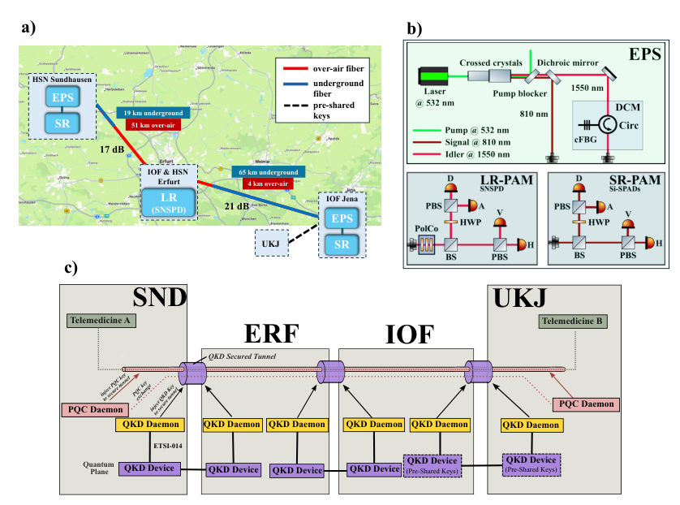
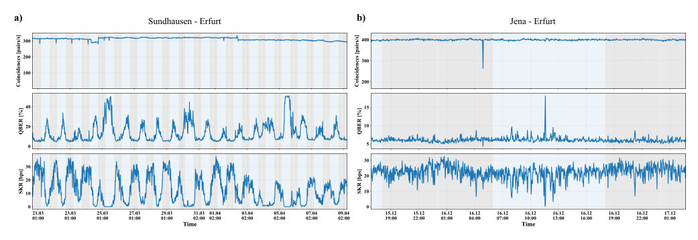
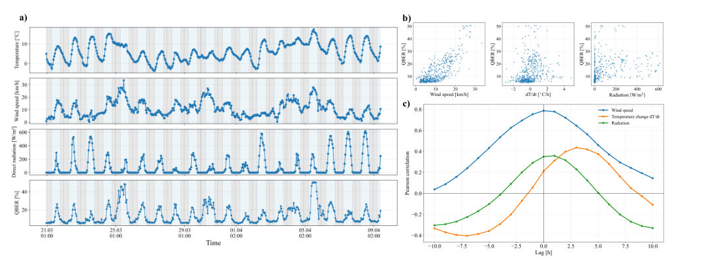
Summary. This paper demonstrates a robust, quantum-safe communication framework by combining entanglement-based Quantum Key Distribution (QKD) with Post-Quantum Cryptography (PQC) over a 140 km fiber link. The system successfully secured a telemedicine proof-of-concept without modifying existing hospital infrastructure. This establishes a practical blueprint for deploying quantum-resistant security in critical real-world networks.
Why it may be interesting. While focused on networking, the work involves advanced quantum optics techniques (entangled photon sources, polarization control) and the practical application of quantum key distribution over challenging, real-world fiber links, which is highly relevant to quantum network development.
Main problem. The threat posed by quantum computers to classical public-key cryptography necessitates the deployment of quantum-safe communication for critical infrastructure like healthcare.
Main result. The authors successfully demonstrated a practical, field-deployed quantum-secure telemedicine network integrating entanglement-based QKD with PQC over 140 km of real-world fiber.
Method. They implemented a layered security architecture where QKD establishes link-level keys injected into VPN tunnels, while PQC secures the communication end-to-end, all without modifying existing medical systems.
Model / system. The system uses polarization-entangled photon pairs transmitted over a heterogeneous fiber network (underground/aerial) connecting a health kiosk to a hospital. The architecture combines QKD key exchange (BBM92 protocol) with PQC key encapsulation (QuantShake1).
Key observables. Quantum Bit Error Rate (QBER), coincidence rates, and the correlation between QBER fluctuations and environmental factors like wind speed.
Important parameters / regimes. 140 km fiber link length, 22 days of autonomous operation, and the use of active polarization stabilization and dispersion compensation.
Assumptions / limitations. The layered approach assumes that QKD keys are consumed directly by the VPN layer, and PQC provides the necessary end-to-end authentication, mitigating risks associated with trusted nodes.
Figures summary. Figures illustrate the field-deployed network topology, the layered security architecture (QKD tunnels + PQC outer layer), and time evolution plots showing QBER and coincidence rates over the 22-day operational period.
Paper structure. The paper details the scientific motivation (quantum threat), presents the layered QKD+PQC architecture, describes the experimental setup and implementation details (photon sources, stabilization, key distillation), reports performance metrics over long-term deployment, and discusses environmental impairments.
The threat quantum computers pose to classical public-key cryptography motivates the deployment of quantum-safe communication for critical infrastructure such as healthcare, finance, and energy systems. Quantum key distribution (QKD) and post-quantum cryptography (PQC) offer complementary security guarantees, information-theoretic key exchange and quantum-resistant end-to-end authentication that can be combined in a layered architecture. Here, we demonstrate a field-deployed quantum-secure network integrating entanglement-based QKD with end-to-end PQC over 140 km of installed fiber in Thuringia, Germany, connecting a rural health kiosk to a university hospital via a trusted-node architecture comprising heterogeneous underground and aerial fiber links. Unlike conventional deployments that rely on a dedicated key management system to forward keys to applications, our architecture injects QKD keys directly into standard Linux-based VPN tunnels between adjacent nodes, while PQC secures the communication end-to-end, remaining fully compatible with existing infrastructure and software. Polarization-entangled photon pairs were generated at 810 nm and 1550 nm, with the telecom photon transmitted over deployed fiber. Active polarization stabilization and dispersion compensation preserve the entanglement and enable 22 days of continuous, fully autonomous operation, further underscoring the technological maturity of entanglement-based QKD approaches in a real-world fiber environment. Although the two deployed links were operated during separate rather than concurrent periods, the predominantly aerial link exhibited markedly greater instability, with QBER variations most strongly correlated with wind speed. The generated keys secured a telemedicine proof-of-concept without modifying existing medical systems, demonstrating a practical framework for quantum-safe critical infrastructures.
Authors: Alejandra A. Padilla, Valentina Gacha, Daniel F. Urrego, Juan P. Torres
Type: both · Category: other · PDF: https://arxiv.org/pdf/2608.18750v1
Analysis basis: full PDF text, analyzed in chunks
Topic relevance: 🔥 quantum optics experiment 4/5 · interference shaping light 3/5 · driven-dissipative phase transition 1/5 · quantum measurements 1/5
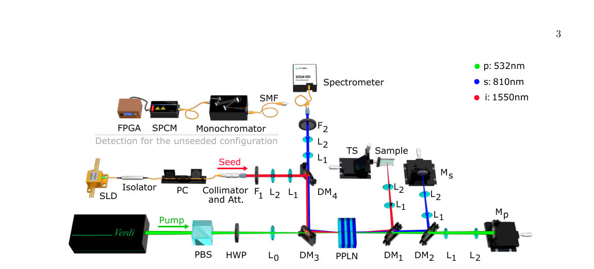
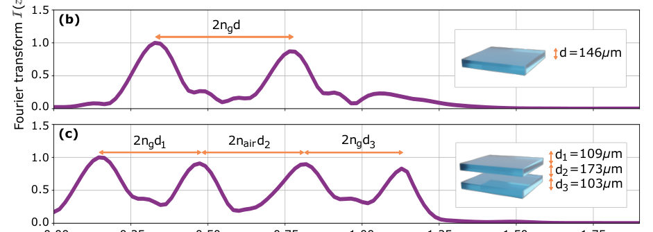
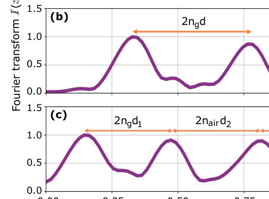
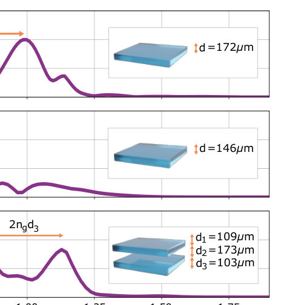
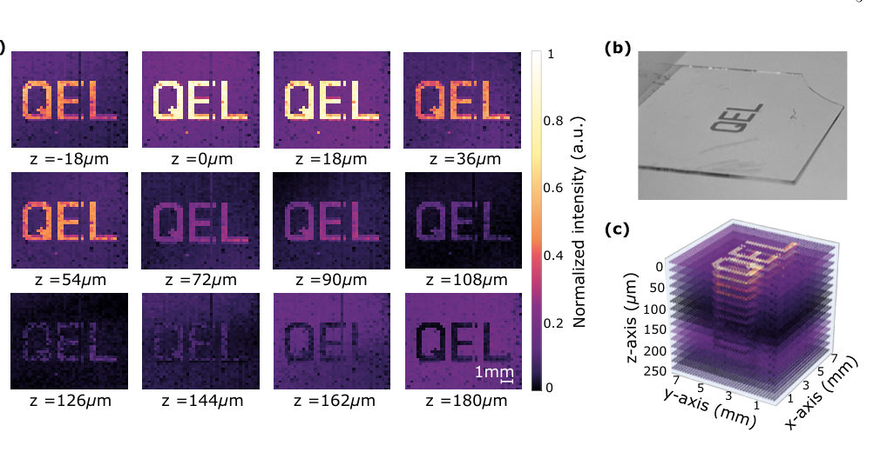
Summary. This paper presents the use of a seeded SU(1,1) interferometer for Fourier-domain Optical Coherence Tomography (FD-OCT). By implementing seeding, the authors overcome low photon flux limitations inherent in the system, enabling high-flux, volumetric 3D imaging. They conclude that seeding is a superior method for enhancing measurement sensitivity compared to increasing the intrinsic parametric gain.
Why it may be interesting. This work is highly relevant to quantum optics and open quantum systems as it details the practical implementation of quantum-enhanced sensing (via nonlinear interferometry) for advanced imaging applications, specifically quantifying the advantage of seeding over simply increasing parametric gain.
Main problem. The paper addresses the development of Fourier-domain Optical Coherence Tomography (FD-OCT) using a seeded SU(1,1) interferometer, specifically overcoming low photon flux limitations.
Main result. Seeding the interferometer significantly increases the photon flux, enabling volumetric imaging using standard spectrometers, and this method proves more effective for sensitivity enhancement than increasing parametric gain.
Method. The authors combine theoretical modeling of multilayer object reflectivity with experimental demonstration using a seeded SU(1,1) setup to reconstruct depth-resolved 3D images via Fourier transformation of the measured spectrum.
Model / system. The physical system is an SU(1,1) interferometer utilizing nonlinear parametric down-conversion in a PPLN crystal. It is used to probe multilayer objects by sending broadband light at 1550 nm and measuring reflected signals at 810 nm.
Key observables. Reconstructed axial scans (A-scans) showing internal layer composition, and the measured photon flux $\langle N_{s2} angle$ used for precision estimation.
Important parameters / regimes. Low parametric gain regime ($ ext{G}_{ ext{CW}} \sim 7 imes 10^{-5}$), spectral resolution ($\delta \lambda_s$), and the ratio of sensitivity enhancement from seeding versus gain increase.
Assumptions / limitations. The analysis assumes the low parametric gain regime necessitates seeding for practical high-flux measurements, and certain simplifications are made regarding the object reflectivity in the idler path.
Figures summary. Figure 1 shows the experimental setup. Figure 2 demonstrates reconstructed A-scans for single/multilayer samples. Figure 3 shows volumetric OCT imaging of a patterned coating.
Paper structure. The paper moves from establishing the experimental setup and theory (including OCT requirements and sensitivity decay correction) to demonstrating the successful application of seeding for high-flux, high-resolution volumetric imaging.
We demonstrate Fourier-domain optical coherence tomography (FD-OCT) based on a seeded SU(1,1) interferometer. Multilayer objects are probed with broadband light centered at 1550nm, while depth-resolved 3D images are reconstructed from photon flux measurements centered at 810nm. We show that, in the low parametric-gain regime, seeding increases the photon flux, enabling volumetric imaging with a spectrometer rather than single-photon detectors. Our analysis further shows that, under the conditions considered, seeding provides a more effective route to sensitivity enhancement than increasing the parametric gain.
Authors: Haneul Kwak, Ian Stevenson, Weijun Yuan, Siwei Zhang, Asaf Toprakci, Lin Su, Tijs Karman, Sebastian Will
Type: both · Category: quantum gases · PDF: https://arxiv.org/pdf/2608.19180v1
Analysis basis: full PDF text, analyzed in chunks
Topic relevance: 🔥 analog quantum simulation 4/5 · Keldysh / 2PI / non-Gaussian methods 1/5 · quantum measurements 1/5
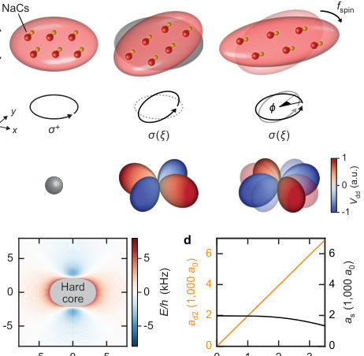
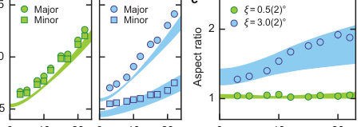
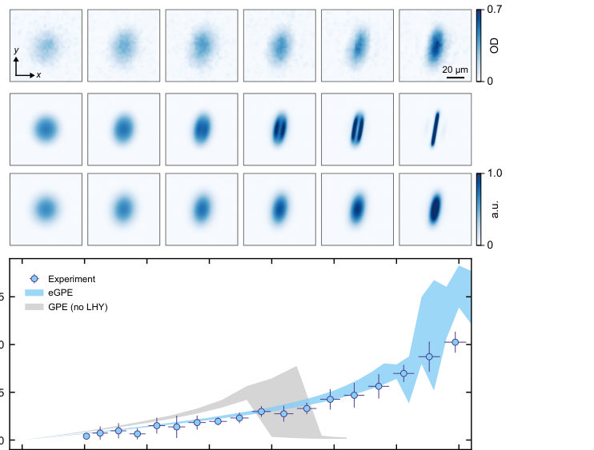
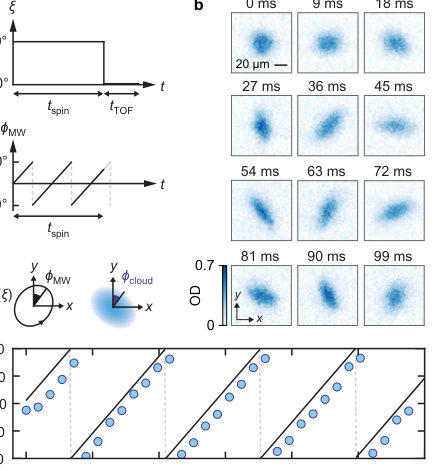
Summary. This study investigates electrostriction in a BEC of dipolar molecules, using microwave dressing to precisely control the anisotropic dipole-dipole interactions. By modeling the system with an extended Gross-Pitaevskii equation, the authors confirm the theoretical predictions against experimental measurements of cloud deformation. Crucially, they demonstrate that this control mechanism can be used to torque the BEC, providing a novel tool to probe fundamental quantum phenomena like superfluidity and vorticity in dipolar quantum gases.
Why it may be interesting. This work provides a highly controllable platform to study many-body quantum dynamics in dipolar systems, moving beyond simple mean-field descriptions by incorporating LHY corrections and demonstrating active control over macroscopic quantum properties like rotation and vorticity.
Main problem. The study focuses on observing and modeling electrostriction—an elliptical deformation—in a Bose-Einstein Condensate (BEC) of dipolar molecules, and demonstrating the ability to torque the BEC by controlling the dipole-dipole interaction orientation.
Main result. Electrostriction was successfully observed and modeled with excellent agreement using an extended Gross-Pitaevskii equation (eGPE). Furthermore, the anisotropic dipolar interactions allow for dynamically torquing the BEC, opening pathways to study vorticity and superfluidity.
Method. The research combines experimental measurements (time-of-flight expansion, cloud shape analysis) with theoretical modeling using the extended Gross-Pitaevskii equation (eGPE) incorporating Lee-Huang-Yang (LHY) corrections.
Model / system. The system is a BEC of dipolar molecules (e.g., NaCs) trapped in an external potential. The dynamics are governed by an eGPE that includes both short-range contact interactions and long-range, anisotropic dipolar interactions, which are tuned via double microwave dressing.
Key observables. Cloud shape, aspect ratio, electrostriction magnitude, and the resulting torque/rotation of the condensate.
Important parameters / regimes. Ellipticity ($\xi$) and orientation ($\phi$) of the microwave dressing field; dipolar lengths ($a_d$); interaction regimes (weak to moderate interactions).
Assumptions / limitations. The model relies on the eGPE framework, which approximates the short-range potential as a contact interaction, and the LHY term is used to account for beyond-mean-field quantum fluctuations.
Figures summary. Figures illustrate the anisotropic expansion of the BEC during time-of-flight, showing the dependence of cloud size on the microwave dressing ellipticity ($\xi$), and demonstrating the torque induced by changing the microwave polarization.
Paper structure. The paper first establishes the physical phenomenon (electrostriction) using microwave dressing to control dipolar interactions. It then models the dynamics using the eGPE, comparing theory to experimental measurements of cloud expansion. Finally, it utilizes this control to induce rotation, opening avenues for studying superfluid properties.
The recent creation of a Bose-Einstein condensate (BEC) of dipolar molecules has opened a new frontier for many-body quantum systems in which dipolar interactions can drive novel self-organization phenomena. Here, we observe electrostriction in a molecular BEC, an elliptical deformation driven by anisotropic dipolar interactions. We use double microwave dressing, involving $σ$- and $π$-polarized fields, to control non-axially symmetric dipolar interactions. We compare the experimental observations of electrostriction to a model based on an extended Gross-Pitaevskii equation and find excellent agreement in the regime of weak to moderate interactions. Using electrostriction, we demonstrate that the molecular BEC can be torqued by dynamically changing the orientation of the elliptical $σ$ microwave field. This provides a route to setting molecular quantum gases into rotation, opening opportunities to probe vorticity, superfluidity, and supersolidity in strongly dipolar matter.
Authors: Thomas Köhler, Adrian Kantian
Type: theory · Category: strongly correlated electrons · PDF: https://arxiv.org/pdf/2608.18861v1
Analysis basis: full PDF text, analyzed in chunks
Topic relevance: 🔥 analog quantum simulation 4/5 · methods for driven-dissipative 2/5
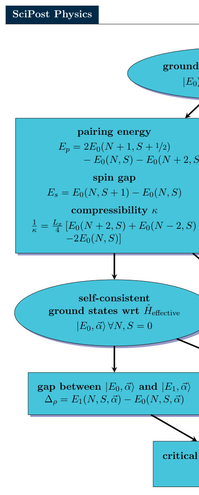
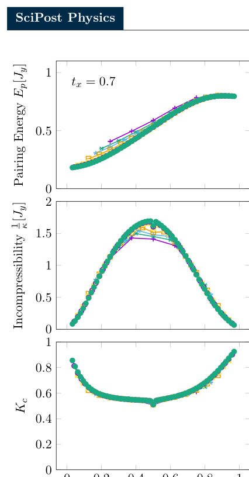
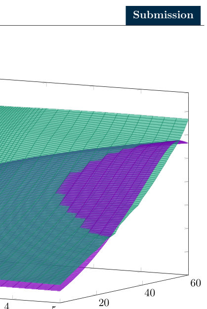
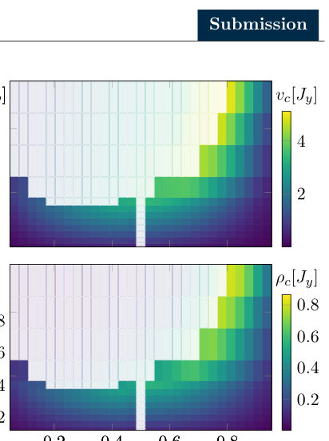
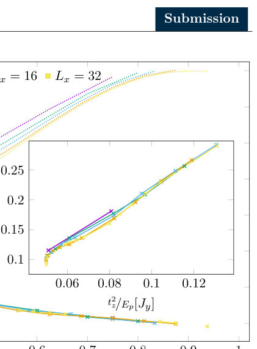
Summary. This paper develops a theoretical framework using the Matrix Product State plus Mean Field approach to study high-Tc superconductivity in mixed-dimensional (mixD) lattice models. By treating the system as coupled 1D ladders, the authors predict that these structures can realize a high-Tc superconducting state. This work is significant because it provides a detailed, numerically grounded method to analyze complex correlated electron physics relevant to next-generation quantum materials.
Why it may be interesting. The combination of MPS+MF theory with the physical context of cold atom quantum simulation for high-Tc superconductivity provides a concrete, computationally tractable pathway to study complex strongly correlated physics.
Main problem. The paper aims to predict the critical temperature (Tc) for high-Tc superconductivity, moving beyond the limitations of the standard 2D Hubbard model.
Main result. The study predicts that 2D mixed-dimensional (mixD) models, when simulated using the MPS+MF approach, can enter a high-Tc superconducting phase, contrary to some previous expectations regarding pairing energy.
Method. The core method is the Matrix Product State plus Mean Field (MPS+MF) theory applied to characterize coupled 1D ladder systems, which are then assembled into 2D bilayer models.
Model / system. The system is modeled by mixed-dimensional (mixD) lattices, specifically 2D bilayers composed of coupled 1D ladders, governed by a t-J type Hamiltonian. This is investigated in the context of quantum simulation using ultra-cold atomic lattice gases.
Key observables. Pairing energy (Ep), spin gap (Es), superconducting stiffness (rho_c), and the critical temperature (Tc).
Important parameters / regimes. Anisotropic tunneling parameters, system size (limited to experimentally relevant sizes), and the ratio function R(Kc).
Assumptions / limitations. The analysis relies on the MPS+MF approximation, which is assumed valid when inter-ladder coupling is smaller than the pairing and spin gaps; the results are also limited by achievable finite system sizes.
Figures summary. Figure 1(a) shows the 2D mixD model structure, and Figure 8 illustrates the ratio function R(Kc) as a function of the Luttinger parameter Kc.
Paper structure. The work first characterizes 1D mixD systems using MPS+MF, establishing heuristics for their use as building blocks. It then extends this to 2D bilayer systems, calculating key superconducting diagnostics (Ep, Es, Tc) based on the effective Hamiltonian derived via mean-field theory.
Quantum simulation based on ultra cold atomic lattice gases is one of the most promising platforms to investigate high-$T_c$ superconductivity beyond the limited capabilities of quantum many body numerics on classical computers. Yet, despite enormous progress since the field's inception, realizing a high-$T_c$ superconducting state still remains out of reach. The present work lays the groundwork to purpose the recently proposed, and already partly realized, mixed-dimensional (mixD) models, towards this end. These systems offer the proven capability to realize very high pairing energies while retaining appreciable mobility of pairs. We specifically investigate the potential of 2D mixD-models with anisotropic tunneling, using the matrix product state plus mean field theory (MPS+MF) for fermions, and show that these models may enter a high-$T_c$ superconducting phase. These simulations in turn are based on a comprehensive characterization of the 1D mixD-systems, which are the sub-units of which the 2D system is comprized. In this, we cover the range of currently experimentally relevant system sizes, and establish practical heuristics to determine when finite\hyp size effects preclude the use of a 1D mixD-system to build the 2D ones.
Authors: Clment Geffroy, Dorian Nicolas, Eric Eyraud, Shelender Kumar, Supriya Mandal, Julien Jarreau, Laura Kowalski, Laurent Del-Rey, Didier Dufeu, Nicolas Roch, Wolfgang Wernsdorfer, Quentin Ficheux, Matias Urdampilleta
Type: experiment · Category: quantum information and computing · PDF: https://arxiv.org/pdf/2608.18699v1
Analysis basis: full PDF text, analyzed in chunks
Topic relevance: 🔥 QC/QI experiment 4/5 · quantum measurements 1/5
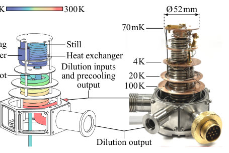
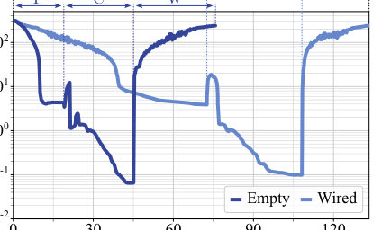
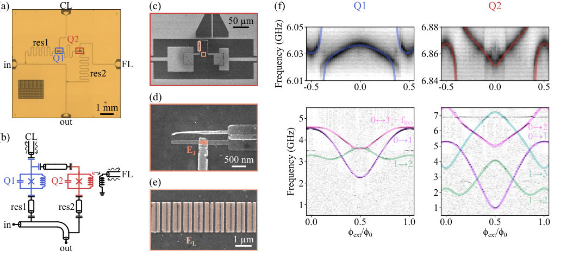
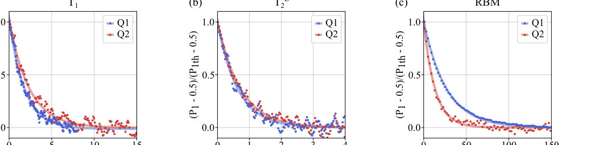
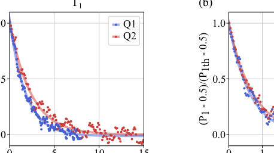
Summary. This paper introduces an ultracompact dilution refrigerator designed to overcome the slow cooldown times that hinder quantum device development. By successfully characterizing a fluxonium qubit on this compact platform, the authors show that high-fidelity quantum measurements can be performed rapidly. This establishes the refrigerator as a practical tool for high-throughput quantum hardware testing.
Why it may be interesting. The work directly addresses the engineering bottleneck in quantum hardware development by providing a practical, high-throughput cryogenic platform, which is crucial for scaling up quantum computation experiments.
Main problem. Rapid thermal cycling is a major bottleneck in developing superconducting quantum devices due to the long cooldown times of conventional dilution refrigerators.
Main result. The authors demonstrated that an ultracompact, fast-cycling dilution refrigerator can support state-of-the-art quantum characterization, achieving high single-qubit gate fidelities while drastically reducing turnaround time.
Method. The study involved characterizing a two-fluxonium device using two-tone spectroscopy, measuring energy relaxation ($T_1$), coherence times, and performing single-qubit randomized benchmarking.
Model / system. The platform is an ultracompact dilution refrigerator (3 kg, 100 mm diameter) used to cool superconducting qubits (specifically, two-fluxonium qubits) to base temperatures around 70 mK. The qubit Hamiltonian is characterized by parameters like $E_C, E_L, E_J$.
Key observables. Single-qubit gate fidelity (up to 99%), energy-relaxation time ($T_1$), coherence time ($T_E$), and the full circuit Hamiltonian parameters.
Important parameters / regimes. Cooldown time (2.1 h fully equipped vs. $\sim 48$ h conventional), cooling power ($20 \mu ext{W}$ at $100 ext{ mK}$), and base temperature ($70 ext{ mK}$).
Assumptions / limitations. The primary limitations are the reduced cooling power and higher base temperature compared to large-scale systems, which limits the achievable coherence times.
Figures summary. Figures illustrate the schematic of the compact cryostat, the temperature evolution during cooldown/warmup cycles, and the results of qubit lifetime and randomized benchmarking.
Paper structure. The paper first identifies the bottleneck of slow cryogenics, presents the compact refrigerator platform, details the characterization of a fluxonium device using spectroscopy and time-domain measurements, and concludes by demonstrating that the fast cycling capability supports high-fidelity quantum control.
Rapid thermal cycling is a central bottleneck in the development of superconducting quantum devices: conventional dilution refrigerators require cooldowns of a day or more and substantial cryogenic infrastructure, which throttles the fabricate-measure-redesign loop. We present an ultracompact dilution refrigerator (3 kg in mass and 100 mm in diameter) that completes a full cooldown-warm-up cycle to a base temperature of 70 mK in 1.2 hours when unloaded, and in 2.1 hours when fully equipped with the microwave wiring required for qubit measurements, while delivering 20 microW of cooling power at 100 mK. We validate the platform through a complete characterization of a two-fluxonium device: we extract the full circuit Hamiltonian by two-tone spectroscopy, measure energy-relaxation and coherence times, and benchmark single-qubit control. Although the relaxation time is limited by the base temperature of the system, we reach a single-qubit gate fidelity of up to 99%, at the coherence limit set by our operating temperature. These results demonstrate that compact, fast-cycling dilution refrigeration can support state-of-the-art quantum-device characterization without sacrificing measurement quality, offering a practical route to high-throughput quantum-hardware development.
Authors: Eric R. Bittner, Carlos Silva-Acuna
Type: theory · Category: other · PDF: https://arxiv.org/pdf/2608.19175v1
Analysis basis: full PDF text, analyzed in chunks
Topic relevance: driven-dissipative phase transition 3/5 · methods for driven-dissipative 3/5 · Keldysh / 2PI / non-Gaussian methods 2/5 · correlated / nonlocal dissipation 2/5 · non-equilibrium universality 2/5 · analog quantum simulation 1/5 · quantum measurements 1/5
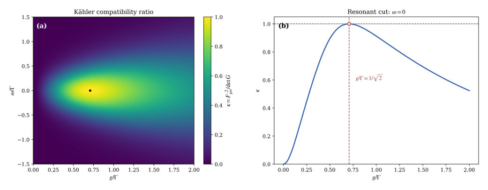
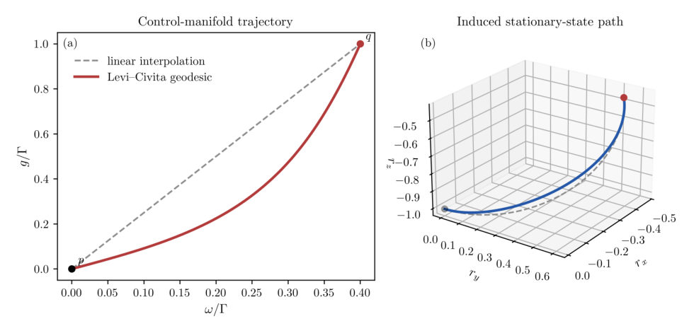
Summary. This paper develops a geometric theory by embedding the state and generator of an open quantum system into a combined ambient space. It derives a metric and connection on the control manifold that governs how physical observables must be transported between different model points. This geometric approach provides a rigorous, path-dependent measure of physical distance and change for open quantum dynamics.
Why it may be interesting. This work provides a powerful, coordinate-independent mathematical tool to compare and interpolate between different steady-state quantum models, which is crucial for understanding parameter-dependent quantum phenomena in optics and quantum control.
Main problem. The paper develops a geometric framework to consistently transport physical observables across the control space of an open quantum system.
Main result. It establishes that the state-generator representation $( ho_{ss}, L)$ induces a metric and connection on the control manifold, allowing for a geometrically rigorous definition of parallel transport.
Method. The authors embed the physical model $( ho_{ss}, L)$ into a state-generator ambient space and derive geometric structures (metric, one-form, two-form) via pullback, calculating the Levi-Civita connection using automatic differentiation.
Model / system. The system is an open quantum system whose dynamics are governed by a Liouvillian superoperator $L(\lambda)$. The physical model is parameterized by a control manifold $M$ and is represented by the ordered pair of its stationary state $ ho_{ss}$ and its generator $L$.
Key observables. Induced metric, response one-form, closed two-form, geodesic distance, and the Levi-Civita connection.
Important parameters / regimes. Control parameters $\lambda$ (e.g., frequency $\omega$, coupling $g$, decay rate $\Gamma$ for the optical Bloch model).
Assumptions / limitations. The theory is restricted to finite-dimensional, time-homogeneous Markovian dynamics generated by a Lindblad form, and the physical manifold is constrained by the Liouvillian null-state condition.
Figures summary. A figure compares the Levi-Civita geodesic path (red) to simple linear interpolation (gray dashed) in the control space, demonstrating that the true physical path follows a shorter, curved trajectory.
Paper structure. The paper first formulates the state-generator representation and derives induced geometric objects (metric, forms). It then analyzes the compatibility conditions (Kähler structure) and finally derives the associated Levi-Civita connection and parallel-transport law.
We develop a geometry for transporting stationary-state response across the control space of an open quantum system. A physical model is represented by the ordered pair of its stationary state and dynamical generator. Embedding these pairs in a common ambient space induces a metric, a response one-form, and a closed two-form on the control manifold. The ambient space admits a canonical complex structure that exchanges state and generator directions, but the Liouvillian null-state condition restricts physical models to a submanifold that need not preserve this structure. For an amplitude-damped optical Bloch model, the metric and response two-form are compatible at the single point $ω=0$ and $g/Γ=1/\sqrt{2}$; the physical manifold is non-Kähler elsewhere. The induced metric defines the Levi--Civita connection, geodesics, and parallel transport without requiring Kähler compatibility. We compute the connection by automatic differentiation through the stationary Liouvillian solve and recover the symbolic result to machine precision. A two-point calculation then shows that the resulting geodesic differs from linear interpolation in control space and follows a shorter path through the family of state--generator models. This geometry supplies the intrinsic derivative and transport structure needed to carry observable response, including multidimensional spectra, between admissible stationary models.
Authors: Bin Lu, Adeel Afridi, Nadine Meyer, Romain Quidant
Type: experiment · Category: other · PDF: https://arxiv.org/pdf/2608.19016v1
Analysis basis: full PDF text, analyzed in chunks
Topic relevance: interference shaping light 3/5 · quantum optics experiment 3/5 · analog quantum simulation 2/5 · quantum measurements 2/5 · driven-dissipative phase transition 1/5
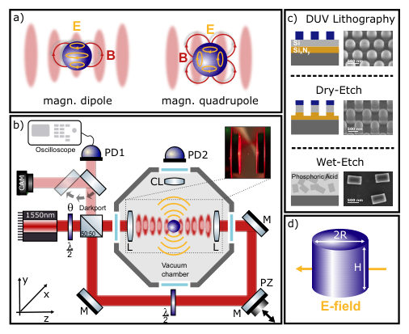
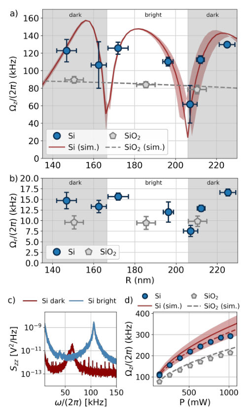
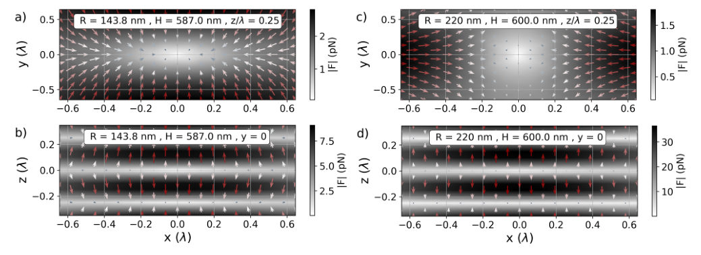
Summary. The research demonstrates the ability to trap resonant silicon meta-atoms deterministically and stably within the intensity minima of an optical standing wave. By exploiting Mie resonances, the authors achieve force-inversion, a capability superior to standard silica particles. This work establishes meta-atoms as a versatile tool for accessing novel optical trapping regimes beyond conventional intensity maxima.
Why it may be interesting. This work directly bridges concepts from atomic physics (e.g., blue-detuned trapping analogy) into the realm of solid-state nanophotonics, demonstrating how engineered material resonances (Mie resonances) can provide unprecedented control over optical forces, which is highly relevant to quantum control and trapping mechanisms.
Main problem. To demonstrate and characterize the deterministic and stable three-dimensional (3D) trapping of resonant meta-atoms in optical intensity minima, a regime inaccessible to standard silica particles.
Main result. The authors successfully achieved stable 3D trapping of silicon meta-atoms at intensity minima, showing enhanced trapping stiffness compared to silica and demonstrating force control via Mie resonances.
Method. The experiment uses a Sagnac interferometer setup to trap fabricated silicon nanoparticles in an optical standing wave, measuring trap frequencies and analyzing far-field scattering patterns.
Model / system. The system involves resonant silicon meta-atoms (nanoparticles) trapped in a standing wave formed by two counter-propagating laser beams. The trapping force is governed by the effective polarizability ($\alpha_{ ext{eff}}$), which can be tuned by exploiting Mie resonances.
Key observables. Trap frequencies ($\Omega_x, \Omega_y, \Omega_z$), the sign of the optical force (determining trapping at maxima vs. minima), and the far-field scattering pattern rotation ($\pi/2$).
Important parameters / regimes. Particle radius ($R$), laser wavelength ($\lambda = 1550 ext{ nm}$), and the effective polarizability ($\alpha_{ ext{eff}}$) which dictates the force direction.
Assumptions / limitations. The optical force is approximated by $F \approx -\alpha_{ ext{eff}} abla I$, and the analysis relies on comparing scattering patterns at different positions ($z=0$ vs. $z=\pm\lambda/4$).
Figures summary. Figures illustrate the experimental setup, the dependence of trap frequencies on particle radius ($R$) for Si vs. $ ext{SiO}_2$, and the polarization-angle dependence of the scattered power confirming trapping at intensity minima.
Paper structure. The paper progresses from introducing the concept of meta-atoms over standard particles, detailing the experimental setup and fabrication, presenting the key results showing force inversion and enhanced trapping at intensity minima, and concluding with a discussion of the implications for optical manipulation.
High-refractive-index particles have recently attracted a growing interest in optical levitation experiments, offering the ability to further engineer optical forces through electromagnetic Mie resonances. Unlike standard silica particles, which are predominantly trapped in the dipole regime and exhibit trap frequencies mainly determined by material density, resonant meta-atoms formed by high-index particles enable qualitatively new trapping behaviors. In this work, we experimentally investigate the trapping of resonant silicon particles in an optical standing wave. A direct comparison of silicon and silica highlights the fundamental differences in their optical force scaling and trapping dynamics. Beyond conventional trapping at intensity-maxima, we demonstrate deterministic and stable three-dimensional trapping of silicon nanoparticles in optical intensity minima, a regime that remains inaccessible for silica particles. Drawing a mesoscopic analogy with blue-detuned atom trapping, our results establish meta-atoms as a versatile approach to further extend the optical manipulation tool box towards accessing novel trapping regimes e.g. in close proximity to a surface.
Authors: A. A. Katanin
Type: theory · Category: strongly correlated electrons · PDF: https://arxiv.org/pdf/2608.18540v1
Analysis basis: full PDF text, analyzed in chunks
Topic relevance: Keldysh / 2PI / non-Gaussian methods 3/5 · methods for driven-dissipative 3/5 · analog quantum simulation 2/5 · quantum measurements 1/5
Summary. This paper details two advanced software packages, Hubb_DMFT and Wan2mb_DMFT, designed to solve the DMFT equations for strongly correlated electron systems. They employ a Continuous-Time Quantum Monte Carlo solver within the CT-HYB framework to calculate key observables like the self-energy and interaction vertices. The work is significant for providing robust tools to study correlated materials ranging from simple Hubbard models to complex multi-orbital systems like TMDs.
Why it may be interesting. While focused on solid-state correlation, the use of advanced quantum Monte Carlo techniques and the development of highly specialized, numerically exact solvers for many-body Hamiltonians are relevant to understanding complex quantum dynamics in open quantum systems.
Main problem. The paper addresses the challenge of solving the Dynamical Mean-Field Theory (DMFT) equations for strongly correlated electron systems.
Main result. It introduces two specialized software packages, Hubb_DMFT and Wan2mb_DMFT, capable of calculating local self-energies and two-particle vertices for both single-band and multi-orbital Hubbard models.
Method. The core method is based on a self-consistent DMFT loop utilizing a modified Continuous-Time Quantum Monte Carlo (CT-QMC) solver within the Hybridization Expansion (CT-HYB) framework.
Model / system. The models studied are the single-band and multi-orbital Hubbard models. The multi-orbital extension specifically interfaces with Wannier tight-binding Hamiltonians derived from DFT calculations.
Key observables. Local self-energy ($\Sigma$), local Green's function ($G_{ ext{local}}$), and two-particle fermion/triangular fermion-boson charge and spin vertices.
Important parameters / regimes. Coulomb interaction ($U, V_q$), hopping parameters ($t_{ij}$), and orbital parameters ($U, J_H$). Benchmark studies use parameters like $U = 5.6t$ for cuprate models.
Assumptions / limitations. The calculations rely on the CT-HYB algorithm for achieving numerically exact solutions for the quantum impurity problem. Multi-orbital calculations require careful handling of double-counting corrections.
Figures summary. Figure 1 shows calculated $\Sigma$ and triangular vertices for the 2D Hubbard model. Figure 3 shows similar results for a $ ext{CrTe}_2$ monolayer, demonstrating orbital-dependent correlation effects.
Paper structure. The paper presents the two codes, Hubb_DMFT (single-band) and Wan2mb_DMFT (multi-orbital), detailing their implementation using the CT-QMC/CT-HYB framework. It outlines the self-consistent loop structure and provides benchmarks on physical systems like the 2D Hubbard model and TMDs.
We present two related customized software packages, Hubb_DMFT and Wan2mb_DMFT, designed to solve the Dynamical Mean-Field Theory (DMFT) equations for strongly correlated electron systems. Hubb_DMFT is adjusted for the single-band Hubbard model, providing a fast way to calculate the local self-energy, as well as the two-particle fermion and triangular fermion-boson charge and spin vertices, while Wan2mb_DMFT extends this capability to realistic multi-orbital systems, directly interfacing Wannier tight-binding Hamiltonians with many-body solvers. Both codes are based on iQIST v.0.7 impurity solver and utilize a modified and internally integrated Continuous-Time Quantum Monte Carlo (CT-QMC) core with the hybridization expansion (CT-HYB) framework and improved self-energy and vertex estimators for density-density interaction, ensuring numerically exact solutions for quantum impurity problems.
Authors: Yuqing Rong, Huan-Hai Zhou, Guo-Yi Zhu, Jinguo Liu
Type: theory · Category: numerical methods · PDF: https://arxiv.org/pdf/2608.18511v1
Analysis basis: full PDF text, analyzed in chunks
Topic relevance: analog quantum simulation 3/5 · methods for driven-dissipative 3/5 · quantum measurements 2/5
Summary. This paper develops a novel hybrid quantum-classical approach to simulate 2D quantum many-body systems using isometric tensor networks (isoPEPS). It replaces complex tensor contractions with sampling from monitored quantum circuits, making the simulation compatible with near-term quantum hardware. The method successfully estimates ground-state properties for models like the J1-J2 Heisenberg model, validating its potential for simulating complex quantum phases.
Why it may be interesting. This work directly addresses the computational bottleneck in simulating 2D quantum matter by translating the intractable tensor contraction into a physically realizable, near-term quantum circuit sampling routine.
Main problem. The primary challenge is efficiently computing observables for two-dimensional quantum lattice models whose exact Hilbert space dimension grows exponentially.
Main result. The proposed method successfully estimates the energy density for the J1-J2 model and TFIM in qualitative agreement with established methods like DMRG, demonstrating a viable hybrid quantum-classical simulation framework.
Method. The authors parameterize the quantum state using isometric tensor networks (isoPEPS) and replace costly tensor-network contraction with sampling from monitored quantum circuits.
Model / system. The study focuses on 2D quantum spin systems, specifically the J1-J2 Heisenberg model and the Transverse-Field Ising Model (TFIM), implemented on an infinite cylindrical spiral geometry.
Key observables. Energy density, correlation length ($\xi$), longitudinal and transverse magnetizations ($|\langle Z angle|, |\langle X angle|$), and real-space spin correlations ($\langle S_i \cdot S_j angle$).
Important parameters / regimes. The ratio $J_2/J_1$ for the Heisenberg model, and the transverse field strength $g$ for the TFIM.
Assumptions / limitations. The method assumes standard ergodicity for the time average to converge to the stationary boundary state, and the optimization relies on sampling noisy energy estimators.
Figures summary. Figures illustrate the variational sampling framework, the circuit structure for monitoring, the comparison of energy densities against DMRG, and the extraction of correlation lengths and magnetizations for the TFIM.
Paper structure. The paper introduces the isoPEPS ansatz, details the mapping onto monitored quantum circuits for cylindrical/spiral geometries, presents the sampling and optimization procedure (using CMA-ES), and validates the method by calculating observables for the TFIM and J1-J2 model.
Projected entangled pair states (PEPS) provide an efficient variational ansatz for two-dimensional quantum phases, but computing observables remains challenging because PEPS contraction is generally costly. Here, we parameterize two-dimensional quantum states using variational PEPS subject to isometric constraints and map the resulting ansatz onto monitored quantum circuits, replacing tensor-network contraction with circuit sampling. For infinite cylinders, the transfer matrix defines a quantum channel on the virtual boundary. We use a fixed-point treatment and a monitored-circuit unraveling of this channel to evaluate observables efficiently. Using a constant number of variational parameters and a number of qubits that scales only with the cylinder width, our method yields a phase diagram for the $J_1$-$J_2$ model in qualitative agreement with DMRG results. Because the monitored circuits are compatible with near-term quantum hardware, this approach provides a hybrid quantum-classical framework for simulating two-dimensional quantum many-body systems.
Authors: V. Berger, I. S. Tupitsyn, B. Currie, B. V. Svistunov, E. Kozik, N. V. Prokof'ev
Type: theory · Category: strongly correlated electrons · PDF: https://arxiv.org/pdf/2608.19044v1
Analysis basis: full PDF text, analyzed in chunks
Topic relevance: Keldysh / 2PI / non-Gaussian methods 3/5 · analog quantum simulation 3/5 · methods for driven-dissipative 1/5
Summary. This work analyzes superconductivity in flat-band superconductors using the Lieb lattice model. It shows that the conventional understanding of pairing, which requires a large energy gap, breaks down when the bands touch. Despite this, the authors prove that the Bose-Einstein Condensation (BEC) mechanism remains robust, predicting exceptionally high critical temperatures ($T_c$) through advanced diagrammatic calculations.
Why it may be interesting. The study provides rigorous theoretical confirmation of pairing mechanisms in strongly correlated, geometrically constrained systems (flat bands), which is highly relevant to understanding unconventional superconductivity in materials like graphene or topological insulators.
Main problem. The paper investigates the superconducting mechanism in flat-band superconductors, specifically addressing the case where the flat band is gapless or nearly touching the occupied lower band.
Main result. The BEC mechanism remains robust and highly efficient even when the initial band structure is gapless, leading to an exceptionally high superconducting transition temperature ($T_c$).
Method. The authors employ advanced diagrammatic techniques (e.g., Bold4, DiagMC-CoS) combined with a variational two-body ansatz to calculate the bound state properties and $T_c$.
Model / system. The system is modeled using the attractive Hubbard model on the Lieb lattice, which features non-interacting flat bands. The analysis focuses on the formation of bound bosonic pairs of fermions.
Key observables. Superconducting transition temperature ($T_c$), effective mass ($m^*$) of the bound pairs, and the energy gap ($\Delta$) separating the bands.
Important parameters / regimes. The critical regime is when the non-interacting flat and lower bands touch ($\Delta \approx 0$), making the problem fundamentally non-perturbative.
Assumptions / limitations. The analysis relies on solving the two-body problem within a restricted Hilbert space (flat and upper bands) and comparing results across multiple diagrammatic approximations.
Figures summary. Figures illustrate the Lieb lattice structure and band dispersions; they compare calculated energy gaps ($\Delta$) using various methods; and they plot the binding energy $E_b(q)$ and effective mass $m^*$ derived from the pair propagator.
Paper structure. The paper contrasts the conventional BCS picture (large gap) with the gapless case. It then develops a controlled-precision numerical protocol using multiple diagrammatic schemes to calculate the bound state energy and effective mass, ultimately demonstrating the robustness of the BEC mechanism.
The formation of bound bosonic pairs of fermions, followed by their Bose-Einstein (quasi) condensation (BEC), is a foundational mechanism of superconductivity. At low filling, flat-band superconductivity is well captured by this mechanism provided the flat band is separated from the occupied lower band by an energy gap. However, particularly high $T_c$ values are anticipated when the non-interacting flat and lower bands touch---as in the prototypical attractive Lieb-lattice model studied here---invalidating the conventional picture: while interactions might protect the bound state by opening a gap, no small parameter guarantees the separation of the bound-state energy from this gap or occupied-band excitations, leaving the pair's fate uncertain. Based on a controlled-precision numerical protocol---which we demonstrate to be essential in this fundamentally non-perturbative problem---we show that the BEC mechanism, underpinned by an interaction-induced gap, is generically robust and remarkably efficient: fermions doped into the flat band form bound pairs within this gap with an anomalously light effective mass, enabling an exceptionally high $T_c$.
Authors: Carlos Henrique de Lima, David McKeen, David E. Morrissey, Michael Shamma
Type: theory · Category: other · PDF: https://arxiv.org/pdf/2608.18203v1
Analysis basis: full PDF text, analyzed in chunks
Topic relevance: Keldysh / 2PI / non-Gaussian methods 3/5 · analog quantum simulation 2/5 · methods for driven-dissipative 1/5 · quantum measurements 1/5
Summary. This work theoretically examines how gauge couplings might vary due to coupling with a dynamical scalar field. It argues that fundamental quantum field theory principles restrict this variation to a logarithmic dependence on the scalar field, rather than a simple linear one. The analysis uses RG techniques to predict the behavior of these couplings in both vacuum and early-universe settings.
Why it may be interesting. While focused on particle physics, the use of RG flow, threshold effects, and the dependence of effective couplings on background fields ($\phi$) mirrors concepts in condensed matter physics concerning emergent symmetries and scale dependence.
Main problem. The paper investigates the fundamental origins and nature of varying gauge couplings in particle physics, specifically how they arise from quantum field theory interactions.
Main result. In weakly coupled, renormalizable 4D QFTs, gauge invariance forces the leading dependence of the effective gauge coupling on a scalar field to be logarithmic, not linear.
Method. The authors use Renormalization Group (RG) techniques to analyze the effective gauge coupling dependence on a dynamical scalar field, comparing results from effective field theory (EFT) approaches with full UV completions.
Model / system. The model involves the Standard Model gauge couplings coupled to a dynamical scalar field ($\phi$) via an interaction term, often analyzed using a toy model with charged fermions whose mass depends on $\phi$.
Key observables. The effective gauge coupling $g_{ ext{eff}}^2(\mu, \phi)$ and its running dependence on energy scale ($\mu$) and scalar vacuum expectation value ($\phi$).
Important parameters / regimes. The scalar coupling parameters ($M, y, \Lambda_g$) and the energy scales ($\mu, T$) are crucial, with the analysis focusing on threshold effects set by the fermion mass $m(\phi)$.
Assumptions / limitations. The primary assumption is that the theory is weakly coupled and renormalizable in four dimensions, which dictates the logarithmic running behavior.
Figures summary. Figure 1 compares the full theory evolution of $4\pi/g_2$ and $m(\phi)$ versus temperature $T$ against linear approximations. Figure 2 normalizes scales to the UV fermion mass, illustrating the flow from UV to IR.
Paper structure. The paper first establishes the general argument for logarithmic running (Pages 1-4), then applies this to a specific toy model involving fermion mass thresholds (Section 2.1), and finally discusses the implications for the early universe and beyond.
Variations in the gauge couplings of the Standard Model have been searched for experimentally and proposed as solutions to open questions in fundamental physics. Varying gauge couplings can arise from a dynamical scalar field coupled to the gauge kinetic term. This mechanism has been invoked extensively, assuming a minimal linear coupling of the scalar to the gauge bosons. In this work, we investigate how this operator is generated from the ultraviolet perspective. We argue that in weakly coupled, renormalizable completions in four spacetime dimensions, gauge invariance forces the leading dependence of the effective gauge coupling on the scalar to be logarithmic rather than linear. The gauge coupling evolution in these scenarios can be entirely described by the renormalization-group running with dynamical mass thresholds. Beyond leading order or four dimensions, we provide examples showing that more general behavior is possible. Finally, we discuss the phenomenological implications of dynamically evolving gauge couplings, particularly in early-universe settings.
Authors: Kyle G Sherman, Michael J Lawler
Type: theory · Category: strongly correlated electrons · PDF: https://arxiv.org/pdf/2608.18301v1
Analysis basis: full PDF text, analyzed in chunks
Topic relevance: analog quantum simulation 3/5 · methods for driven-dissipative 3/5 · Keldysh / 2PI / non-Gaussian methods 1/5
Summary. This theoretical study investigates how the frustrated spin texture of Pr ions in $ ext{Pr}_2 ext{Ir}_2 ext{O}_7$ dictates its electronic properties. By coupling a spin-ice model to an Ir electronic Hamiltonian, the authors show that local variations in the Pr spins can induce a spatial pattern of electronic inhomogeneity. This suggests that frustration-driven local magnetism is the key mechanism driving the observed mixture of Kondo-screened and Kondo-destroyed electronic states.
Why it may be interesting. This work provides a concrete theoretical mechanism linking geometric frustration (Pr spin texture) to emergent electronic phenomena (Kondo screening breakdown) in strongly correlated oxides, which is highly relevant to understanding correlated materials physics.
Main problem. The study investigates whether the frustrated spin texture of the rare-earth element Pr in $ ext{Pr}_2 ext{Ir}_2 ext{O}_7$ is responsible for the observed electronic inhomogeneity, which manifests as a mixture of Kondo-screened and Kondo-destroyed regions.
Main result. The model successfully reproduces the inhomogeneous tunneling map, suggesting that local fluctuations in the Pr spin texture can drive the system into a frustration-driven regime exhibiting the observed Kondo/Kondo-destroyed electronic state.
Method. The authors employed Monte Carlo sampling of classical Pr spin-ice configurations, coupling these to an eight-band Hartree-Fock model for the Ir electrons to calculate local density of states.
Model / system. The system is the pyrochlore iridate $ ext{Pr}_2 ext{Ir}_2 ext{O}_7$. The electronic structure is modeled using an eight-band Hartree-Fock approach for Ir, coupled via a Kondo exchange interaction ($J_K$) to classical Pr spins treated via an effective spin-ice Hamiltonian.
Key observables. Local density of states ($ ho(\mathbf{r}, ext{eV})$), gap closing, AIAO magnetic order parameter, and the ratio governing the local balance between Kondo screening and magnetic order ($T_K$ vs $T_{ ext{RKKY}}$).
Important parameters / regimes. Kondo coupling strength ($J_K$), the difference between 'ice' and 'jellyfish' textures ($\Delta J_{Kc} \approx 0.03 t$), and the local Fermi level density of states ($ ho( ext{EF})$).
Assumptions / limitations. The Pr spins are treated as classical, static moments, and the simulation assumes the local electronic state is governed by the Doniach balance.
Figures summary. Figure 2 illustrates the dependence of the gap and AIAO order on $J_K$ for different Pr spin textures. Figure 3 presents a synthetic tunneling map showing insulating islands within a metallic sea across a simulated Pr surface.
Paper structure. The paper establishes the problem by noting the experimental inhomogeneity in $ ext{Pr}_2 ext{Ir}_2 ext{O}_7$. It then develops a theoretical model coupling Pr spins to Ir electrons, simulating various Pr spin configurations. The results demonstrate how local Pr magnetism drives the system across phase boundaries, leading to the predicted inhomogeneous electronic structure.
The pyrochlore iridate $Pr_2Ir_2O_7$ remains metallic at low temperatures where its family members insulate. Recently, scanning tunneling spectroscopy experiments have revealed an inhomogeneous mixture of Kondo-screened and Kondo-destroyed regions when its surface is produced by cleaving at room temperature while it remains uniform when cleaved at low temperatures. We ask whether the frustrated praseodymium spin texture seeds this inhomogeneity. To study this, we produce Monte-Carlo-sampled Pr spin-ice configurations, presumed to evolve slowly in time, and couple through a local Kondo exchange $J_K$ to an eight-band Hartree-Fock model of the Ir electrons. We further find the charge gap of the all-in-all-out state common in the other family members closes smoothly with the coupling $J_K$, and the recently proposed monopole-rich ``jellyfish'' textures further suppress the insulating behavior by $ΔJ_{Kc}\approx 0.03\,t$. Additionally, scanning a small cluster across a large Pr surface yields a synthetic tunneling map that fractures into islands within a sea. Although our classical simulable theory omits the Kondo singlet, the spatial modulation of the Fermi-level density of states it produces is, through the exponential Doniach sensitivity of the Kondo temperature, sufficient to tip the local balance between screening and magnetic order; a frustration-driven route to the observed Kondo/Kondo-destroyed inhomogeneity.
Authors: Yuguan Li, D. C. Liu, Murray T. Batchelor
Type: theory · Category: statistical mechanics · PDF: https://arxiv.org/pdf/2608.18633v1
Analysis basis: full PDF text, analyzed in chunks
Topic relevance: analog quantum simulation 3/5 · Frenkel-Kontorova 1/5 · driven-dissipative phase transition 1/5 · non-equilibrium universality 1/5
Summary. This paper solves the spectral problem for the periodic Baxter-Fendley $Z_N$ clock chain by employing an operator-valued matching polynomial derived from the cyclic Weyl algebra. This method yields a finite set of polynomial equations whose solutions determine the entire finite-size energy spectrum. The results provide a practical numerical route to the ground state and characterize boundary-induced quantum critical points.
Why it may be interesting. The rigorous mathematical machinery developed for solving this integrable model provides powerful techniques for analyzing spectral gaps and phase transitions in quantum lattice models, which are central to AMO and condensed matter theory.
Main problem. The primary challenge is finding a complete finite-size spectral solution for the periodic non-Hermitian Baxter-Fendley $Z_N$ clock chain, which is difficult due to the constraints of periodic boundary conditions.
Main result. The authors show that the matching polynomial generates conserved quantities and realizes a cyclic $ au^{(2)}$ Yang-Baxter transfer matrix, leading to a finite system of polynomial spectral equations that reproduce the full energy spectrum.
Method. The method combines operator-valued matching polynomials derived from the cyclic Weyl algebra with root-of-unity fusion techniques to solve the spectral problem.
Model / system. The system is the periodic $L$-site chain of $N$-state clocks, governed by a non-Hermitian Hamiltonian. The analysis extends open-chain solutions by imposing periodic boundary conditions via a matching cycle.
Key observables. The complete finite-size energy spectrum, the ground-state energy, and the critical couplings ($\lambda^*$).
Important parameters / regimes. The chain length $L$, the clock size $N$, and the coupling parameters $\lambda$ and $\mu$.
Assumptions / limitations. The analysis assumes the existence of a spectral-orbit cycle $C_N$ closing the finite spectral problem, and relies on analytic continuation arguments for ground state determination.
Figures summary. Figure 1 illustrates the transition from an open-chain matching path to a periodic matching cycle. Figure 2 compares the finite-$L$ second derivative of the ground-state energy against thermodynamic predictions, showing a transition from a central feature to two off-center peaks.
Paper structure. The paper develops the spectral solution by first defining the matching polynomial as the transfer matrix, then using root-of-unity fusion to derive the polynomial spectral equations. Finally, it applies these equations to calculate the ground state and analyze critical behavior.
The periodic non-Hermitian Baxter-Fendley $Z_N$ clock chain has lacked a complete finite-size spectral solution, whereas its open-chain counterpart admits a solution in terms of independent quasienergies. For the periodic model we show that the operator-valued matching polynomial associated with its cyclic Weyl algebra simultaneously generates a set of conserved quantities, including the Hamiltonian, and realizes a cyclic $τ^{(2)}$ Yang-Baxter transfer matrix. Root-of-unity closure yields a finite system of polynomial spectral equations in each charge sector, which reproduces the complete finite-size energy spectrum counted with algebraic multiplicity. As a first application of this result, we show that Newton continuation of these equations provides a practical numerical route to the periodic ground-state energy without enumerating the full spectrum. For homogeneous chains the thermodynamic seam response yields a criterion for boundary-induced criticality; for $N=3$ it predicts two reciprocal critical couplings with singular ground-state curvature, in contrast to the single self-dual open boundary critical point.
Authors: Jeet Shannigrahi, Janez Bonča, Mona Berciu
Type: theory · Category: strongly correlated electrons · PDF: https://arxiv.org/pdf/2608.18529v1
Analysis basis: full PDF text, analyzed in chunks
Topic relevance: Keldysh / 2PI / non-Gaussian methods 3/5 · correlated / nonlocal dissipation 1/5 · methods for driven-dissipative 1/5 · non-equilibrium universality 1/5
Summary. This work tackles the thermal decoherence of polarons using an advanced, diagrammatically derived approximation (MA). The authors demonstrate that polaron coherence universally breaks down at a temperature scale set by the phonon frequency, validating theoretical predictions across 1D, 2D, and 3D systems. The method shows excellent quantitative agreement with state-of-the-art numerical techniques.
Why it may be interesting. The universal coherence scale defined by $\Omega$ provides a robust theoretical prediction for polaron dynamics that transcends the restrictive limits of previous theoretical treatments, connecting fundamental lattice models to observable thermal behavior.
Main problem. The paper addresses the long-standing open problem of how polaron quasiparticle coherence degrades as temperature increases.
Main result. The coherence breakdown is universal, occurring when the quasiparticle peak dissolves into a broad thermal continuum at a temperature scale set by the phonon frequency $\Omega$, independent of dimensionality or coupling strength.
Method. The authors employ a finite-temperature generalization of the Momentum Average (MA) approximation, yielding a diagrammatically derived self-energy.
Model / system. The system is modeled by the Holstein Hamiltonian, describing a polaron (electron coupled to phonons) hopping on a hyper-cubic lattice in 1D, 2D, and 3D.
Key observables. Polaron effective mass ($m^*$), inverse lifetime ($1/\tau$), and the spectral function $A(\omega, k)$.
Important parameters / regimes. Temperature ($T$), phonon frequency ($\Omega$), coupling strength ($\lambda$), and dimensionality ($D=1, 2, 3$).
Assumptions / limitations. The MA framework uses an ansatz (MA(0) or MA(1)) that is asymptotically exact in the strong-coupling limit at all temperatures.
Figures summary. Figures compare the temperature dependence of $m^*$ and broadening ($\eta^*$) across dimensions and couplings, and show spectral function evolution comparing MA results against benchmark methods like VED-FTLM and DMRG.
Paper structure. The paper systematically develops the MA approximation, compares its results against established numerical benchmarks (VED-FTLM, DMRG, DMFT), and analyzes the temperature dependence of coherence loss across various coupling and dimensional regimes.
How a polaron loses its quasiparticle coherence with increasing temperature is a long-standing open problem. Holstein addressed it in 1959 only in the extreme antiadiabatic, strong-coupling limit, while more recent numerically exact approaches are largely restricted to one dimension. Here we solve this problem on square and simple cubic lattices across the weak-, intermediate-, and strong-coupling regimes. We show that the polaron effective mass $m^*$ and inverse lifetime $1/τ$ increase monotonically with temperature until, at $T \sim 0.5\,Ω$, the quasiparticle peak dissolves into a broad incoherent thermal continuum. The phonon frequency $Ω$ therefore defines a universal coherence scale, independent of dimensionality and coupling strength, validating Holstein's prediction far beyond the regime in which it was derived. These results follow from a finite-temperature generalization of the Momentum Average (MA) approximation, yielding a closed-form, diagrammatically derived self-energy that is asymptotically exact in the strong-coupling limit at all temperatures. Benchmark comparisons demonstrate excellent quantitative agreement of the resulting 1D spectral functions with the numerically exact Variational Exact Diagonalization-Finite-Temperature Lanczos Method (VED-FTLM) and finite-$T$ Density Matrix Renormalization Group (DMRG).
Authors: Miquéias Jacinto Cirino, Marcos César de Oliveira
Type: theory · Category: disordered systems and neural networks · PDF: https://arxiv.org/pdf/2608.19130v1
Analysis basis: full PDF text, analyzed in chunks
Topic relevance: interference shaping light 3/5 · analog quantum simulation 2/5
Summary. This work analyzes coherent quantum transport on complex, disordered networks, demonstrating that adding too many connections can actually hinder transport efficiency. The key finding is the 'coherent overconnectivity penalty,' which arises because excessive links promote destructive interference and recirculation. This establishes a design principle for optimizing quantum network architectures.
Why it may be interesting. The finding that optimal connectivity is achieved at an intermediate level, rather than full connectivity, provides a crucial design principle for engineering quantum devices where interference effects dominate transport.
Main problem. The paper investigates the fundamental competition between increasing network connectivity (shortcuts) and the destructive effects of quantum interference in coherent quantum transport.
Main result. Coherent transport efficiency exhibits a non-monotonic dependence on bond probability, showing that over-connectivity (approaching full connectivity) actually penalizes transport due to excessive intra-layer recirculation.
Method. The study uses continuous-time quantum walks (CTQWs) simulated on a percolated hierarchical small-world network, comparing coherent dynamics against classical and dephased benchmarks.
Model / system. The model is a percolated hierarchical small-world network, analyzed using the Laplacian CTQW Hamiltonian. The system's dynamics are governed by the competition between path availability and quantum interference effects.
Key observables. Final-layer limiting probability ($\chi_N$) and the coherent overconnectivity penalty ($P_Q$).
Important parameters / regimes. Bond percolation probability ($p$), intra-layer degree parameter ($K$), and the network's hierarchical structure.
Assumptions / limitations. The analysis relies on averaging observables over a large ensemble of percolation realizations and uses a tight-binding approximation for the Hamiltonian.
Figures summary. Figures illustrate the hierarchical small-world architecture, the non-monotonic dependence of $\chi_N$ on $p$, and comparisons between coherent, dephased, and classical transport regimes.
Paper structure. The paper establishes the physical model and observables, develops the theoretical framework using CTQWs, analyzes the dependence of transport efficiency on percolation probability ($p$), and contrasts coherent results with classical/dephased benchmarks to isolate interference effects.
Adding links generally improves classical transport by increasing the number of available paths. We show that coherent quantum transport can display the opposite behavior. Using continuous-time quantum walks on a percolated hierarchical small-world network, we identify a coherent overconnectivity penalty: root-to-boundary transport is maximized at intermediate bond probability and decreases as the network approaches full connectivity. The effect is quantified by the final-layer limiting probability $χ_N$ and by the penalty $P_Q=1-χ_N(p=1)/\max_pχ_N(p)$, which measures the loss caused by making the architecture fully connected. The optimum results from a competition between shortcut-assisted spreading and interference-induced intra-layer recirculation. Spectral analysis shows that bond dilution creates motif-induced degeneracies and reorganizes the eigenstates connecting the root to the outermost layer. A comparison with dephased and classical transport shows that the non-monotonic landscape is not a purely geometrical percolation effect, but a coherent architecture-dependent phenomenon. These results provide a design principle for coherent transport in disordered photonic and quantum-network architectures.